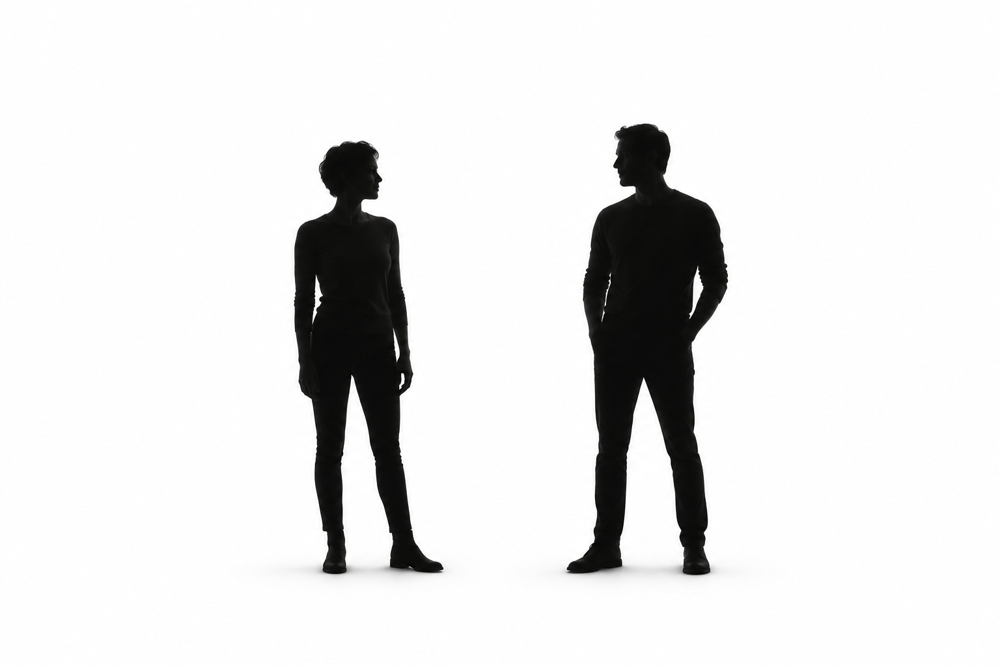

דרך משקפי זוגא

זוגא היא שפה פילוסופית חדשה המתארת את התנועה האינסופית שבין צמד תופעות שביניהן עובר מידע אשר משפיע על המתח, על היחסים ועל האפשרויות הנפתחות בין התופעות.
רוצים לגלות מרחב חדש של אפשרויות? כיצד נולד מתח וכיצד מפחיתים אותו? כיצד ניתן לשנות יחסים עם עצמנו ועם החיים עצמם? תובנות ותפיסות חדשות לאדם, לחברה ולמדינה אשר ישנו את הדרך בה אנחנו רואים את המציאות ואת כל הסובב אותנו.
נפגשים. מסתכלים אחרת.
הרצאה: דרך משקפי זוגא
פילוסופיית התנועה שבין הדברים
זוגא היא שפה פילוסופית חדשה להבנת המציאות, ההרצאה מתאימה לכל מי שמחפשים דרך חשיבה חדשה המפחיתה מתחים ולחצים, מפחיתה קיטוב ומשפרת את היחסים בינינו לבין עצמנו ובינינו לבין העולם. ההרצאה מתאימה לעסקים, לקבוצות, לצוותי עבודה וניהול, לחטיבות ביניים ותיכונים.
המרצה נדב טלר, איש חינוך, סופר ופילוסוף, מלווה את ההרצאה בהומור וקלילות המאפשרים לקהל להבין את מציאות החיים ושפת זוגא בדרך הטובה ביותר.
ניפגש בהרצאה?
ההרצאה מבוססת על סדרת ספרי זוגא המופיעים באתר TellerBP ושואבת השראה מפילוסופיות ועקרונות שונים כמו דאואיזם, סטואיזם, דיאלקטיקה, תורת המערכות, תורת המידע, מדע המדינה ועוד.
באמצעות שפת זוגא אנחנו רואים את היחסים המשתנים, המתח המשתנה, המטוטלת המניעה את הדברים מצד לצד וכיצד כולם מתחברים אל האדם ואל התפיסה האנושית של המציאות.